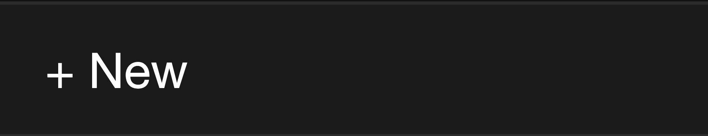
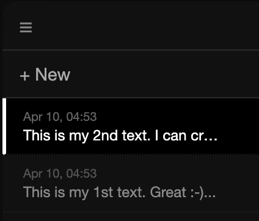
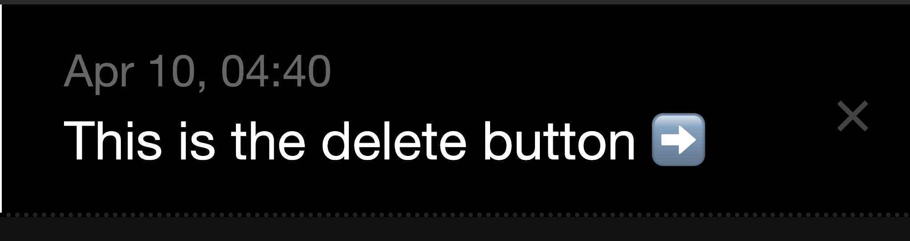
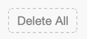

Online notepad in a web browser
JustNotepad.com is a free online notepad in your web browser. Write any text notes — ideas, to-do lists, links, or any other text — directly in a web interface without installing anything.
– Works online in a web browser.
– 100% Free online tool.
– No login required, no sign up required.
– Auto-saves your notes as drafts.
– Multi-note sidebar.
– Markdown editor with live preview.
– Download notes as a .md file.
– Share notes via Telegraph.
– Light, dark, and auto theme.
– Characters and words counter.
AutoSave
JustNotepad.com automatically saves your notes to your browser storage as you type. You can close the tab or browser and your notes will still be there when you come back.
Notes sidebar
JustNotepad.com lets you keep as many notes as you want, all accessible from the sidebar on the left.
To create a new note, press the "+ New" button at the top of the sidebar. A fresh empty note opens immediately in the editor.

All your notes are listed in the sidebar. Click any note to switch to it instantly.

To delete a note, hover over it in the sidebar and press the "×" button.

To delete all notes at once, press "Delete All" at the bottom of the sidebar.

Markdown editor
The editor supports Markdown formatting — headings, bold, italic, lists, links, code blocks, and more. Formatting is rendered live as you type.
Share & Download
Press "Share on Telegraph" in the bottom bar to publish your note as a Telegraph page and get a shareable link. Press "↓ .md" to download your note as a Markdown file.
Characters and words counter
JustNotepad.com automatically counts characters and words as you type. The counter appears below the editor — click it to toggle between character count and word count.